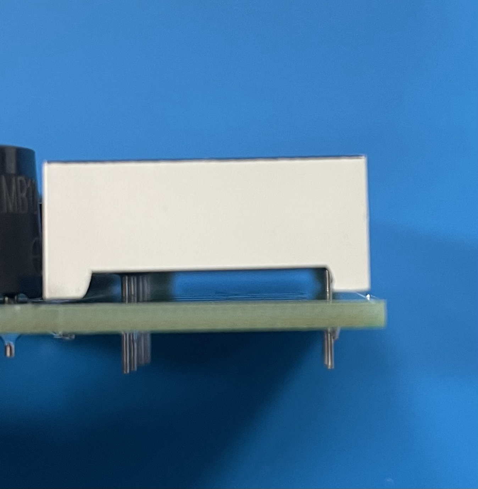
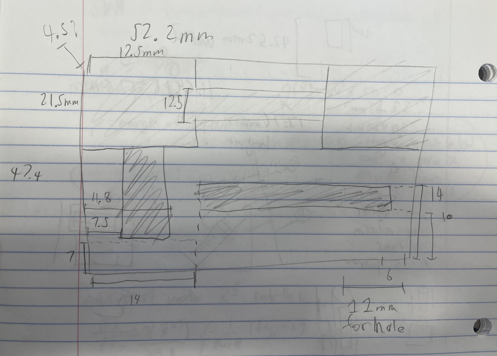
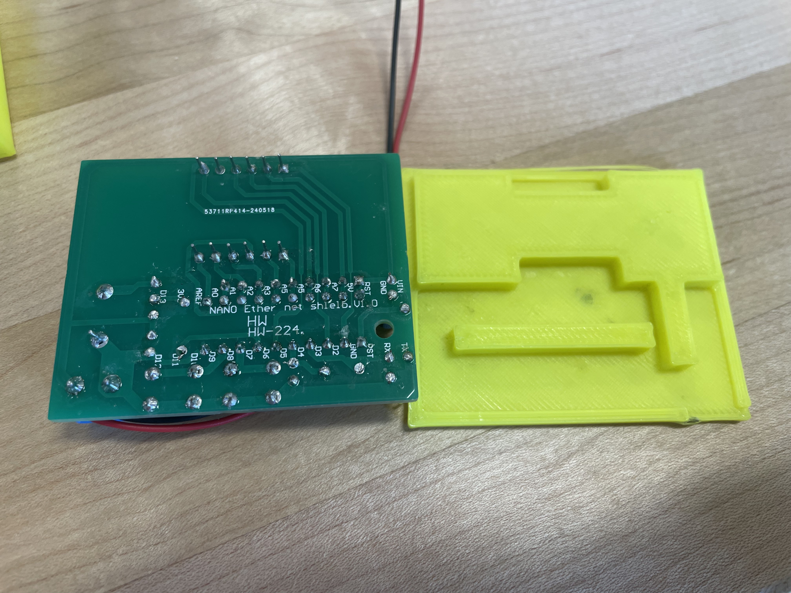
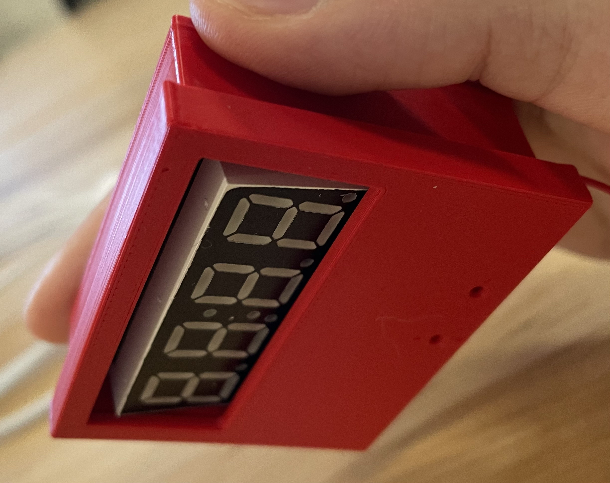
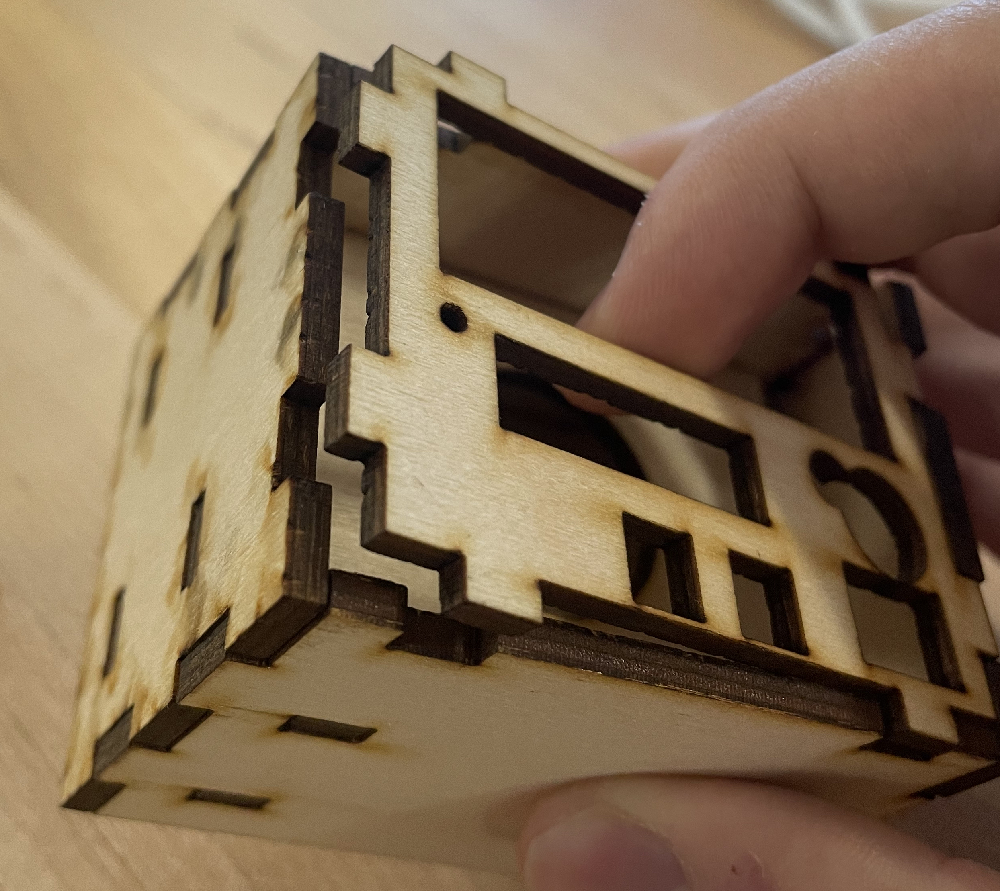

Form and Fit for Electronics
Electronic devices and their housing are everywhere. Like the power button on an iPhone, the housing usually facilitates the function of a device. To create something like this, that fits and has function for an electronic device, was the goal of this project. I worked on soldering and creating an enclosure for an alarm clock. I'd make one enclosure out of 3D printed PLA and another out of laser-cut plywood. First, I had to solder the electronics. The sodering went well, but I noticed small gaps like the one below. Because I was soldering it upside-down, the peice was slipping and falling down as I was soldering it.
Because the soldering left electric wires sticking out, I wanted to make a backplate that smoothy fit into the gaps between the wires. I took some dimensions:
And then printed it, changing the dimensions until it fit well:

I started noticing the theme with PLA being that you don't get a good fit between components until you try it a few times. For instance, I needed to make the walls, and at first they didn't fit well at first:

Despite this, after a few more 3-4 iterations, I improved a few things. For instance, I cleaned up some accidental overhangs on the bottom.

Finally, I got a fit for the lid that fit just right, it even wouldn't come off if put upside down.
Since I was over-budget on iterations and time, I decided to move onto the laser cutting portion. I didn't have time to make the buttons, and I will talk about how to improve my time management in the conclution. Now that I knew what I was doing in the 3D design software Fusion, I put together a box extremely quickly.

Unlike my previous design, it had a place for the battries and even a hole for the wires to be placed through.

There were some take home messages for the next time that I laser-cut wood to make the fit smoother. Firstly, the hinges on the top face, if they're flush with the top means that that plate can come off easily. Inseting them a bit could make the box more stable.
Secondly, I noticed that the laser removed some material in between each hinge, if I 3D print the hinges with a slight overlap (0.5mm?) then the hinges will be more flush when they are actually laser cut.
I understand why some electronic products are not so well made. It takes a long time to iterate on a design. When I was creating the first PLA enclosures, it felt like I was consistently fighting the 3D modeling software. Once I learned how to properly navitage it and set it up correctly, the wood enclosure became much easier. Another contributer me going over-budget on time with the PLA structure was my focus on creating a well fitting backplate for a design that didn't really need it. If I had planned out my whole case form start to finish and estimated the amount of time that it would take to iterate on each part, I would have seen that the backplate would consume a majority of my time. I'll make a more thorough plan next time, because time isn't just money, it's also good design.